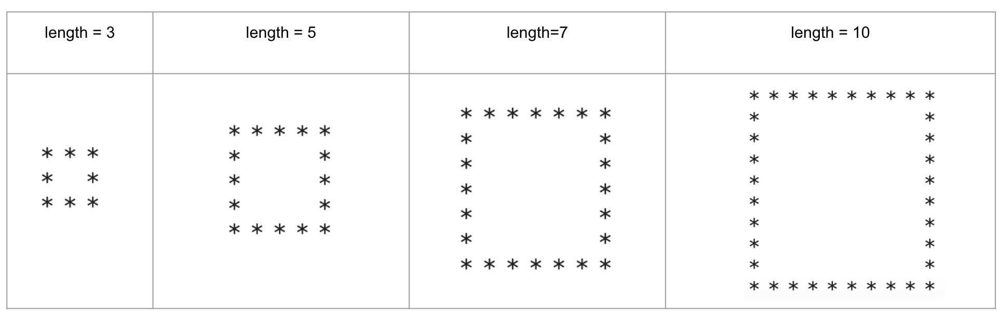

Input and Output Exercises and Solutions#
Warm Up Question#
Write a program that prompts the user for a number and displays the double of that number.
number = float(input('Enter a number:'))
print('Double of', number, 'is', 2*number)
---------------------------------------------------------------------------
StdinNotImplementedError Traceback (most recent call last)
Cell In[1], line 1
----> 1 number = float(input('Enter a number:'))
2 print('Double of', number, 'is', 2*number)
File ~/anaconda3/lib/python3.11/site-packages/ipykernel/kernelbase.py:1201, in Kernel.raw_input(self, prompt)
1199 if not self._allow_stdin:
1200 msg = "raw_input was called, but this frontend does not support input requests."
-> 1201 raise StdinNotImplementedError(msg)
1202 return self._input_request(
1203 str(prompt),
1204 self._parent_ident["shell"],
1205 self.get_parent("shell"),
1206 password=False,
1207 )
StdinNotImplementedError: raw_input was called, but this frontend does not support input requests.
Warm Up Question#
Write a program that prompts the user for a name of a country and displays the number of chareacters in that country’s name.
country = input('Enter a country:')
print('There are', len(country), 'characters in', country)
There are 7 characters in germany
Warm Up Question#
Use the variables \(x,y,z\) and a single print() function to display 3 <= 7 <=9.
Hint: Change the value of the sep parameter.
x, y, z = 3, 7, 9
x, y, z = 3, 7, 9
print(x, y, z, sep=' <= ')
3 <= 7 <= 9
Warm Up Question#
Modify only the end parameter of the given print statements to produce the output A,B??C===D.
print('A')
print('B')
print('C')
print('D')
print('A', end=',')
print('B', end='??')
print('C', end='===')
print('D')
A,B??C===D
Question-1: Multi-Line Print#
Write a single print statement that produces the following output:
A
B
CD
E
Solution
print('A\nB\nCD\nE')
A
B
CD
E
Question-2: Dashed Output#
Use two print() functions, and the strings ‘A’, ‘B’, ‘C’, ‘D’ to generate the following output.
A—B—C—D
Solution
print('A','B','C', end='---', sep='---')
print('D')
A---B---C---D
Question-3: String Mixing#
Use a single print() function and the strings ‘ABCDE’ and ‘FGH’ to generate the following output: FGCDE
Solution
print('ABCDE', '\r', 'FGH','\b', sep='')
FGCDE
Question-4: Number Pattern#
Write a program that prompts the user for a positive integer.
Print that integer.
On the second line, print one more than the given number two times separated by a dash.
On the third line, print two more than the given number three times separated by dashes.
On the fourth line, print three more than the given number four times separated by dashes.
On the fifth line, print four more than the given number five times separated by dashes.
Sample Output:
Please enter an integer: 5
5
6-6
7-7-7
8-8-8-8
9-9-9-9-9
Solution
number = int(input('Please enter an integer:'))
print(number)
print(number+1, number+1, sep='-')
print(number+2, number+2, number+2, sep='-')
print(number+3, number+3, number+3, number+3, sep='-')
print(number+4, number+4, number+4, number+4, number+4, sep='-')
Question-5: Harmonic Mean#
Write a program that prompts the user for 3 numbers using three input() functions.
Find the harmonic mean of these numbers using the formula: \(\displaystyle H(x, y, z) = \frac{3}{\frac{1}{x}+\frac{1}{y}+\frac{1}{z}}\)
Round the harmonic mean to the nearest hundredth and print it in the following format: \(H(x,y,z)=\) rounded harmonic mean.
Sample Output:
Enter x: 2
Enter y: 3
Enter z: 4
H(2.0,3.0,4.0) = 2.77
Solution
x = float(input('Enter x: '))
y = float(input('Enter y: '))
z = float(input('Enter z: '))
H = round(3/(1/x+1/y+1/z), 2)
print('H(',x,',',y,',',z,') = ',H, sep='')
Question-6: Word Repeater#
Write a program that prompts the user for a number and a word using 2 input() functions.
Print the given word as many times as the given number.
Solution
number = int(input('Enter a number: '))
word = input('Enter a word : ')
print(number*word)
Question-7: Standard Deviation#
Write a program that prompts the user for 3 numbers using 3 input() functions.
Find the mean of these three numbers.
Subtract the mean from each number.
Square each of these differences.
Find the mean of these squares.
Take the square root of this mean and round it to the nearest hundredth.
Remark:This is the standard deviation of the given numbers, which provides information about how the given numbers are spread out around the mean.
Solution
import statistics
x = float(input('Enter x: '))
y = float(input('Enter y: '))
z = float(input('Enter z: '))
first_mean = statistics.mean([x, y, z])
xd, yd, zd = x-first_mean, y-first_mean, z-first_mean
second_mean = statistics.mean([xd**2, yd**2, zd**2])
std = statistics.sqrt(second_mean)
print('Std:', round(std, 2))
Question-8: Countdown#
Write a program that prints the numbers starting from 5 down to 1 and displays ‘START’ after that.
Use the sleep() function from the time module to add a 1-second waiting time between each number for observation.
After printing a number, pause for 1 second, then delete it before printing the next number.
The output of your program should resemble a countdown.
Solution
import time
print(5, end='')
time.sleep(1)
print('\b', 4, end='', sep='')
time.sleep(1)
print('\b', 3, end='', sep='')
time.sleep(1)
print('\b', 2, end='', sep='')
time.sleep(1)
print('\b', 1, end='', sep='')
print('\b','START')
START
Question-9: Arrow#
Write a program that prints the moving arrow ‘—>’.
Print the arrow, then add a one-second waiting time, then delete it.
Print the arrow again with a single space in front of it, then add a one-second waiting time, then delete it.
Repeat this procedure 10 times by increasing the space one more in each step.
The output of your program should resemble a moving arrow to the right.
Solution
import time
arrow = '--->'
print(arrow, end='')
time.sleep(1)
print('\r' + ' '*1 + arrow, end='')
time.sleep(1)
print('\r' + ' '*2 + arrow, end='')
time.sleep(1)
print('\r' + ' '*3 + arrow, end='')
time.sleep(1)
print('\r' + ' '*4 + arrow, end='')
time.sleep(1)
print('\r' + ' '*5 + arrow, end='')
time.sleep(1)
print('\r' + ' '*6 + arrow, end='')
time.sleep(1)
print('\r' + ' '*7 + arrow, end='')
time.sleep(1)
print('\r' + ' '*8 + arrow, end='')
time.sleep(1)
print('\r' + ' '*9 + arrow, end='')
time.sleep(1)
print('\r' + ' '*10 + arrow, end='')
--->
Question-10: Standard Scaling#
Write a program that prompts the user for 5 numbers using 5 input() functions.
Find the mean and standard deviation of these three numbers.
Subtract the mean from each number.
Divide each of these differences by the standard deviation.
Remark: This is the standard scaling of a data set. This means that the mean and standard deviation of the data becomes zero and one, respectively.
Solution
import statistics
num1 = float(input('Enter the first number : '))
num2 = float(input('Enter the second number: '))
num3 = float(input('Enter the third number : '))
num4 = float(input('Enter the fourth number: '))
num5 = float(input('Enter the fifth number : '))
mean_num = statistics.mean([num1, num2, num3, num4, num5])
std_num = statistics.pstdev([num1, num2, num3, num4, num5])
num1 = (num1 - mean_num)/std_num
num2 = (num2 - mean_num)/std_num
num3 = (num3 - mean_num)/std_num,
num4 = (num4 - mean_num)/std_num
num5 = (num5 - mean_num)/std_num
print('Standard Scaled:', num1, num2,num3,num4,num5)
Question-11: MinMax Scaling#
Write a program that prompts the user for 5 numbers using 5 input() functions.
Find the minimum and maximum of these numbers.
Subtract the minimum from each number, then divide each of these differences by the difference between the maximum and minimum.
Remark: This is the MinMax scaling of a dataset, meaning that the data becomes scaled between 0 and 1.
Solution
import statistics
num1 = float(input('Enter the first number : '))
num2 = float(input('Enter the second number: '))
num3 = float(input('Enter the third number : '))
num4 = float(input('Enter the fourth number: '))
num5 = float(input('Enter the fifth number : '))
min_num = min(num1, num2, num3, num4, num5)
max_num = max(num1, num2, num3, num4, num5)
num1 = (num1 - min_num)/(max_num-min_num)
num2 = (num2 - min_num)/(max_num-min_num)
num3 = (num3 - min_num)/(max_num-min_num)
num4 = (num4 - min_num)/(max_num-min_num)
num5 = (num5 - min_num)/(max_num-min_num)
print('MinMax Scaled:', num1, num2,num3,num4,num5)
Question-12: Square#
Print a square using the character *.
Each side consists of number many ‘*’ characters with a space between them.
length = 3
Examples 
Solution
length = 5
print('* ' *length)
print(('*'+' '*(2*length-3)+'*\n')*(length-2), end='')
print('* ' *length)
* * * * *
* *
* *
* *
* * * * *
Question-13: User Info#
Write a Python program that does the following:
Prompts the user to enter their first name.
Prompts the user to enter their last name.
Prompts the user to enter their age.
Prompts the user to enter their country.
Prompts the user to enter their city.
Stores each of these values in separate variables. Displays a summary message using the stored values in the following format:
The student Jackson, Amy is 35 years old and from Madrid, Spain.
# first_name = input('Enter your first name: ')
# last_name = input('Enter your last name : ')
# age = int(input('Enter your age : '))
# country = input('Enter your country : ')
# city = input('Enter your city : ')
print('The student ', last_name, ', ', first_name, ' is ', age, ' years old and from ' , city, ', ', country, '.', sep='')
The student Jackson, Amy is 35 years old and from Madrid,Spain.
Question-14: Line Printer#
Write a program that asks the user to enter an integer and uses a single print() function to display that number of lines, each containing a single < character. Hint: Use the newline character ‘\n’.
Sample Output:
Enter an integer: 4
<
<
<
<
num_lines = int(input("Enter an integer: "))
print('<\n' * num_lines)
<
<
<
<
Question-15: Evaluating a Formula#
Write a program that asks the user to enter four numbers: x, y, z, and t.
Then compute the value: \(F = \displaystyle \frac{x^2+5y-z}{\sqrt{t-3}}\)
Finally, print the value of F rounded to two decimal places. (You may assume that t>3.)
Hint: You may use the sqrt function from the math module.
import math
# Ask the user to enter values
x = float(input("Enter x: "))
y = float(input("Enter y: "))
z = float(input("Enter z: "))
t = float(input("Enter t: "))
# Compute F
F = (x**2 + 5*y - z) / math.sqrt(t - 3)
# Print result
print('F = ' + str(round(F,2)))
F = 4.95
Question-16: Time Conversion#
Write a program that asks the user to enter the total number of seconds.
Then convert the time into hours, minutes, and seconds using the format:
H hours M minutes S seconds
Hint: Use integer division (//) and the modulo operator (%) to compute hours, minutes, and seconds.
Sample Input/Output
Input: Enter total seconds: 7453
Output: 2 hours 4 minutes 13 seconds
# Ask the user to enter total seconds
total_seconds = int(input("Enter total seconds: "))
# Compute hours, minutes, and seconds
hours = total_seconds // 3600
minutes = (total_seconds % 3600) // 60
seconds = total_seconds % 60
# Print result using commas and concatenation
print(hours, "hours", minutes, "minutes", seconds, "seconds")
2 hours 4 minutes 13 seconds
Question-17: Price Formatting#
Write a program that asks the user to enter three prices: price_1, price_2, and price_3.
Then display the prices in the following format:
Product-1: $0.00
Product-2: $0.00
Product-3: $0.00
Each price should be rounded to two decimal places.
Hint: Use the built-in format() method to control the number of decimal places.
Sample Input/Output
Input:
Enter price 1: 2.5
Enter price 2: 10
Enter price 3: 4.789
Output:
Enter price 1: 2.50
Enter price 2: 10.00
Enter price 3: 4.79
# Ask the user to enter prices
price_1 = float(input("Enter price 1: "))
price_2 = float(input("Enter price 2: "))
price_3 = float(input("Enter price 3: "))
# Print using format() function and concatenation
print("Product-1: $" + format(price_1, ".2f"))
print("Product-2: $" + format(price_2, ".2f"))
print("Product-3: $" + format(price_3, ".2f"))
Product-1: $12.35
Product-2: $12.00
Product-3: $12.70
Question-18: Digit Extraction#
Write a program that asks the user to enter a four-digit integer.
Then print each digit separately in the following format:
Thousands: 0
Hundreds: 0
Tens: 0
Ones: 0
Hint: Use integer division (//) and the modulo operator (%) to extract each digit.
# Ask the user to enter a four-digit number
number = int(input("Enter a four-digit number: "))
# Extract digits
thousands = number // 1000
hundreds = (number % 1000) // 100
tens = (number % 100) // 10
ones = number % 10
# Print results
print("Thousands:", thousands)
print("Hundreds:", hundreds)
print("Tens:", tens)
print("Ones:", ones)
Thousands: 6
Hundreds: 2
Tens: 1
Ones: 5
Question-19: Loan Payment#
Write a program that asks the user to enter:
the loan amount: P
the annual interest rate: r (in percent)
the number of months: n
First, compute the total amount using simple interest: \(\displaystyle A = P\left(1+\frac{r}{100}\right)\)
Then compute the monthly payment: \(M = \frac{A}{n}\)
Finally, print both A and M rounded to two decimal places.
Sample Input/Output
Input:
Enter loan amount: 1000
Enter annual rate (%): 5
Enter months: 10
Output:
Total amount: $1050.00
Monthly payment: $105.00
# Ask the user to enter inputs
P = float(input("Enter loan amount: "))
r = float(input("Enter annual rate (%): "))
n = int(input("Enter months: "))
# Compute total amount
A = P * (1 + r / 100)
# Compute monthly payment
M = A / n
# Print results
print("Total amount: $" + format(A, ".2f"))
print("Monthly payment: $" + format(M, ".2f"))
Business Applications#
Question: Production Data Analysis#
Write a program that prompts the user for 5 numbers using five input() functions, each representing the annual production for the last five years.
Calculate the total, average, and highest production using built-in functions.
prod1 = float(input('Enter the first production:'))
prod2 = float(input('Enter the second production:'))
prod3 = float(input('Enter the third production:'))
prod4 = float(input('Enter the fourth production:'))
prod5 = float(input('Enter the fifth production:'))
sum_prod = sum([prod1, prod2, prod3, prod4, prod5])
mean_prod =sum_prod/5
max_prod = max(prod1, prod2, prod3, prod4, prod5)
print('Total :', sum_prod)
print('Average :', mean_prod)
print('Highest:', max_prod)
Question: Revenue#
Revenue (R) is the product of the number (n) of items sold and the price (p) of the item.
\(R = p\cdot n\)
Write a program that ask the user for the price of an item and calculate the revenue using the following formula for the number of item sold.
\( n = -1.5p+30 \)
p = float(input('Please enter the price: '))
n = -1.5*p+30
r = n*p
print('Revenue =', r)
Question: Simple Interest#
Simple Interest Formulas: \(\displaystyle I=P r t\) and \(A = P + I\) where
A is the final amount
I is the interest amount
P is the initial (principal) amount
r is the annual interest rate (decimal form)
t is the number of years
Write a program that asks the user for the principal, annual interest rate, and number of years using three input() functions one by one, and then returns the interest and final amount.
Sample Output:
Please enter the principal: 1500
Please enter the annual interest rate: 0.025
Please enter the year: 20
I = 750.0
A = 2250.0
P = float(input('Please enter the principal:'))
r = float(input('Please enter the annual interest rate:'))
t = float(input('Please enter the year:'))
I = P*r*t
A = P + I
print('I =',I)
print('A =',A)
I = 750.0
A = 2250.0